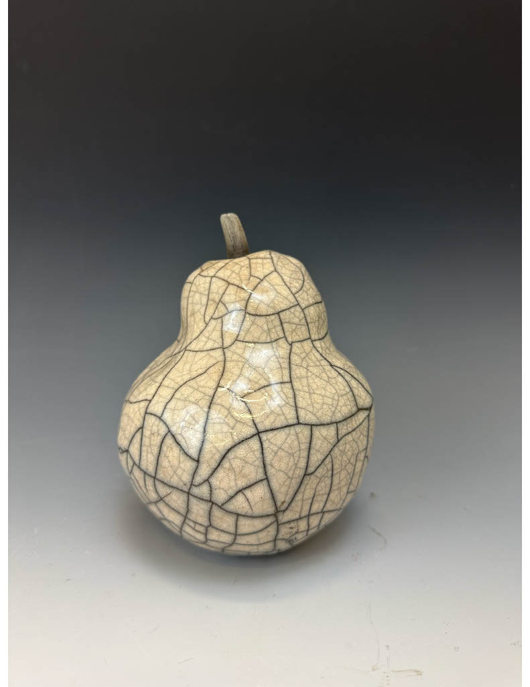
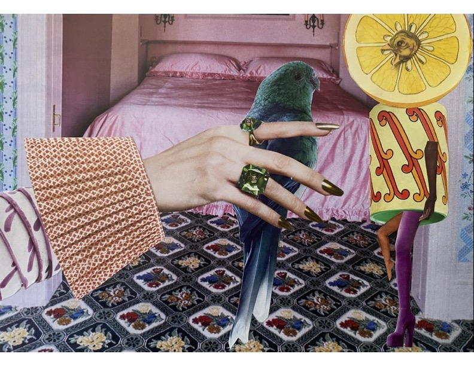
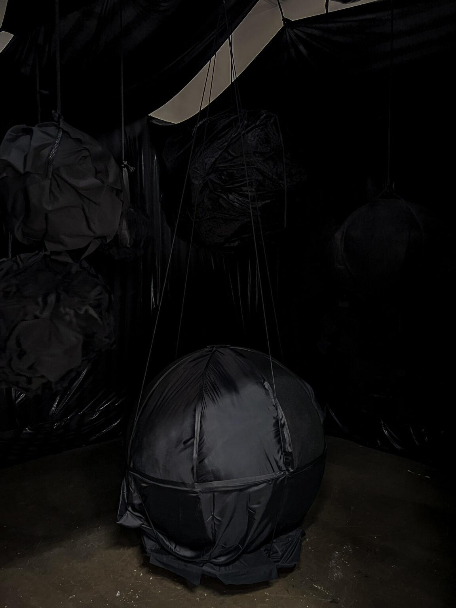
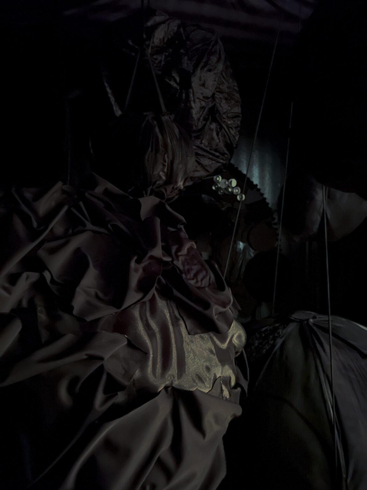
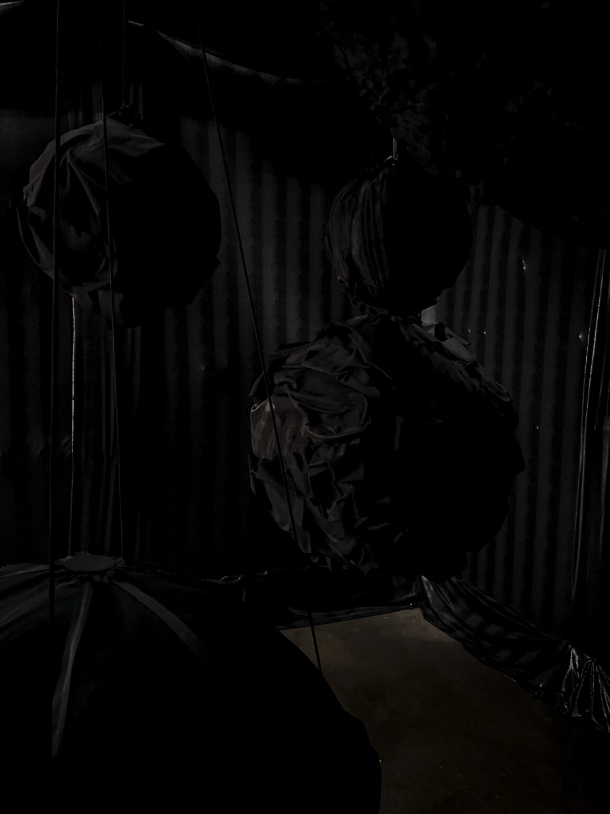
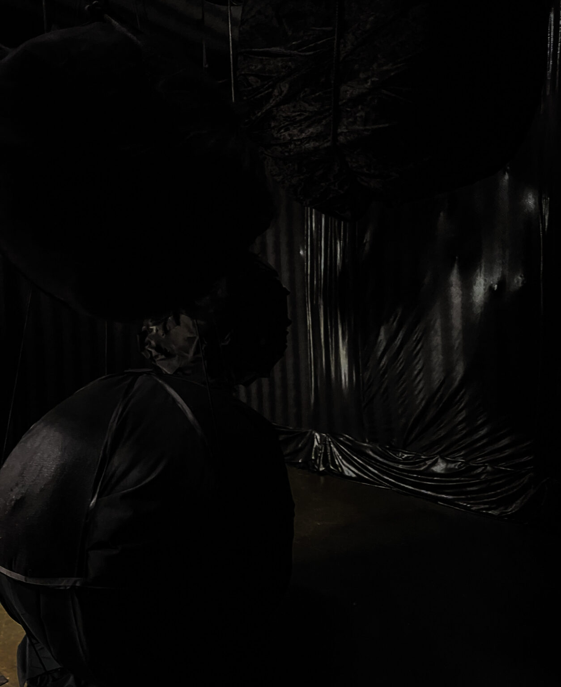
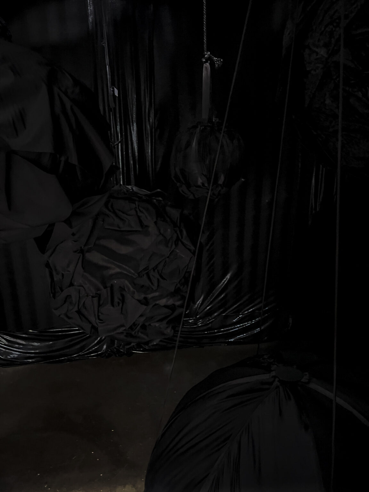
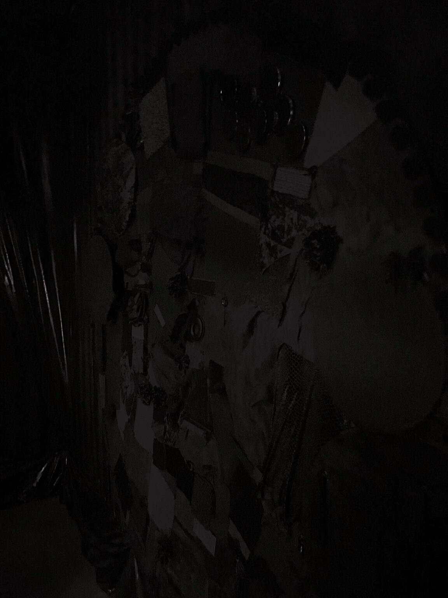
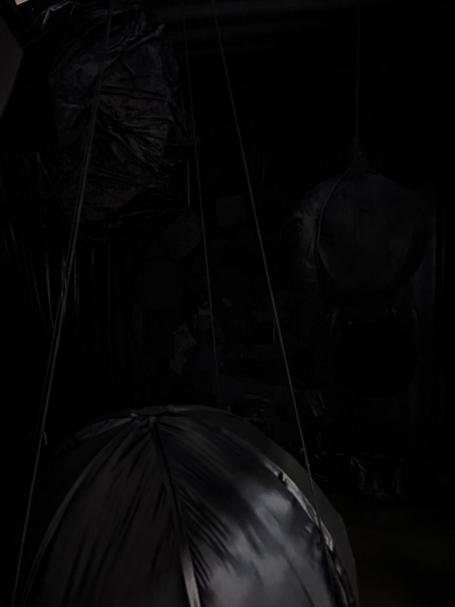

Selected Work

Pear
Raku-fired ceramic · 2025

Bird Talk
Paper collage · 2025

Abyss, It Just Is
Fabric installation · 2026
Abyss, It Just Is
“I create through emotion and gesture — taking all of my discomforts, anxieties, and feelings and embedding them into sculpture.”
A large-scale fabric installation of textured sculptures and walls. Black fabrics hang and swell in the dark, inviting the body in and asking it to feel its way through. Presented in In No Particular Order, the 2026 Senior Show at Vanderbilt University.






— installation views · scroll sideways, lean in —
About
Izabella Burghardt is an artist working in sculpture, ceramics, collage, and installation. Her practice moves through emotion and gesture — transforming discomfort into environments that are by turns amusing, weird, dark, and disturbing, and always meant to be felt as much as seen.
She is a senior at Vanderbilt University double-majoring in Art and Psychology with a minor in Data Science. A QuestBridge Scholar, first-generation college student, and second-generation Polish American, she splits her roots between Colorado and Tennessee.
Recent Exhibitions
- 2026 In No Particular Order — Senior Show, Vanderbilt University, Nashville TN
- 2026 Margaret Stonewall Wooldridge Hamblet Thesis Exhibition, Nashville TN
- 2026 Little Things: A Tiny Print Show — Bongo Java, Nashville TN
- 2025 The Vanderbilt Review — published contributor, art staff